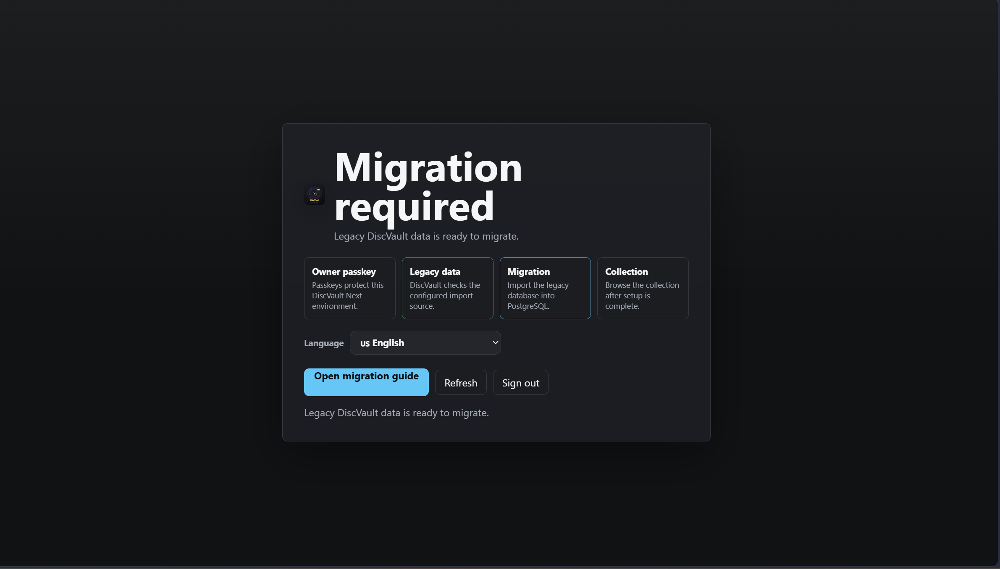
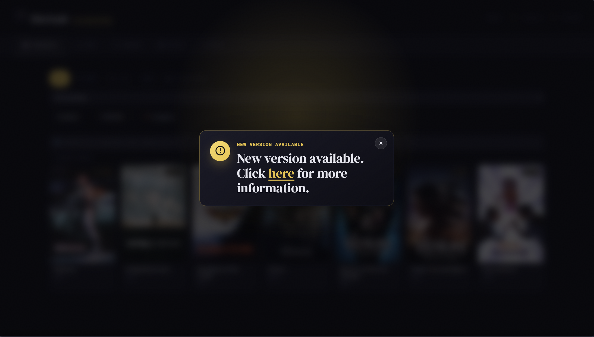
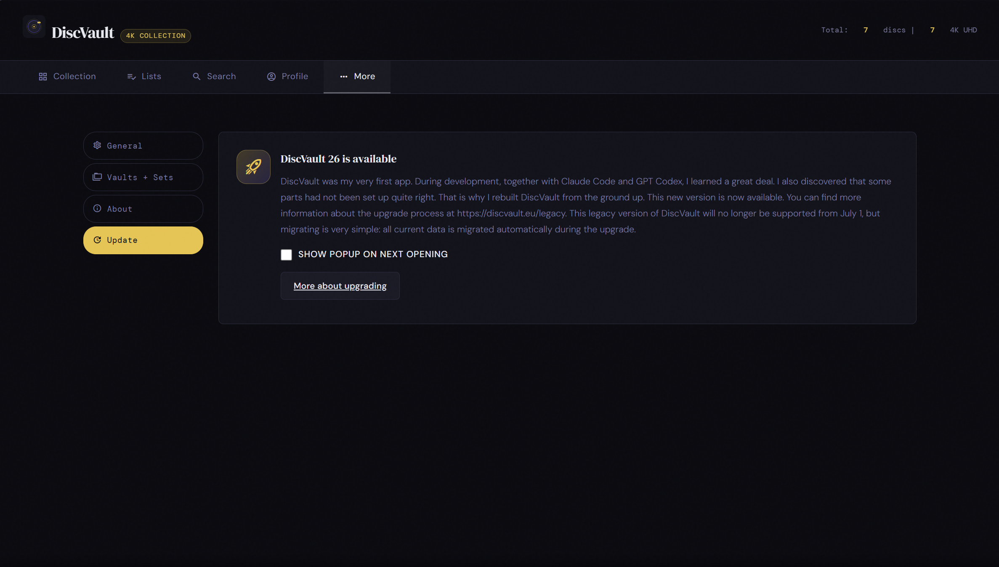
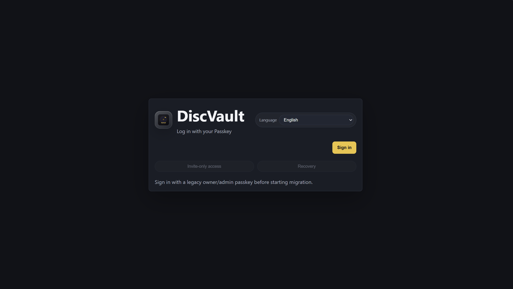
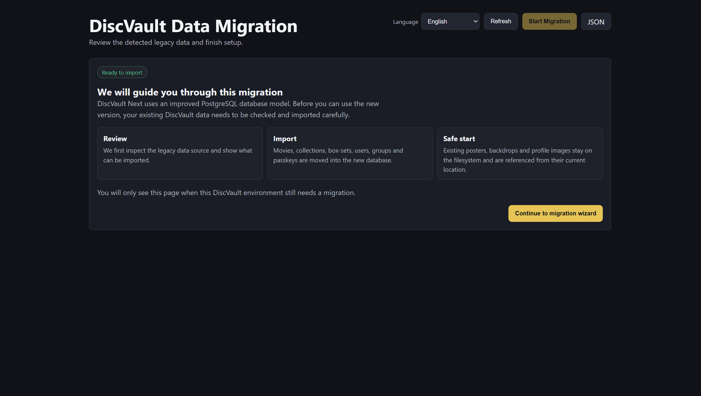
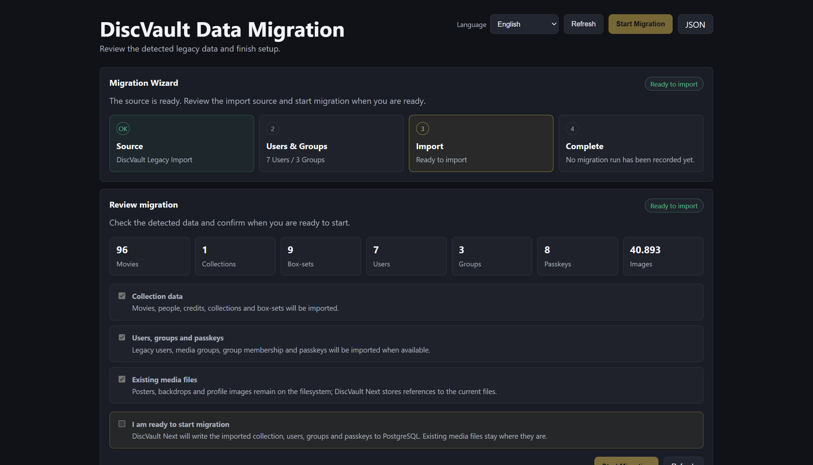
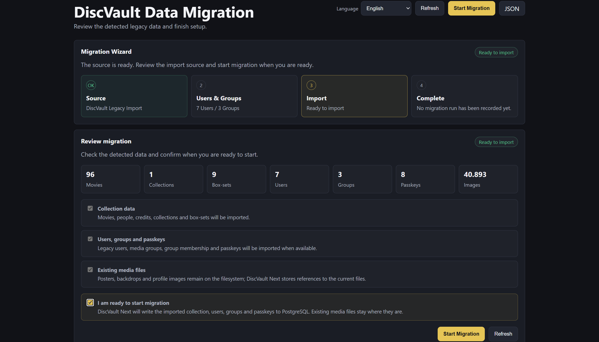
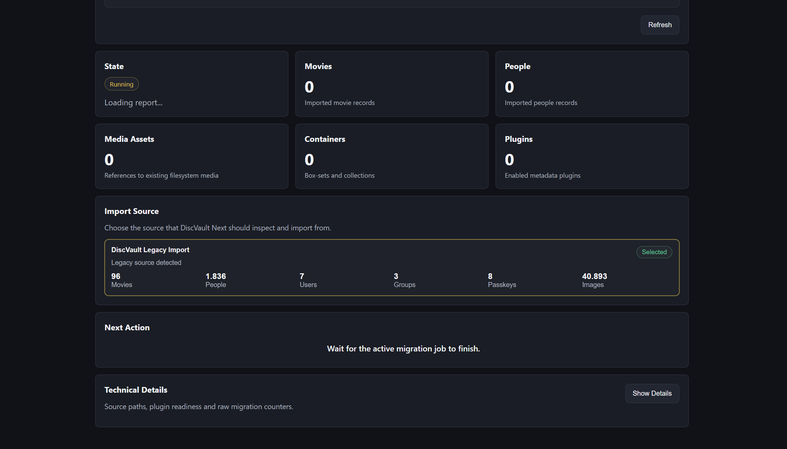
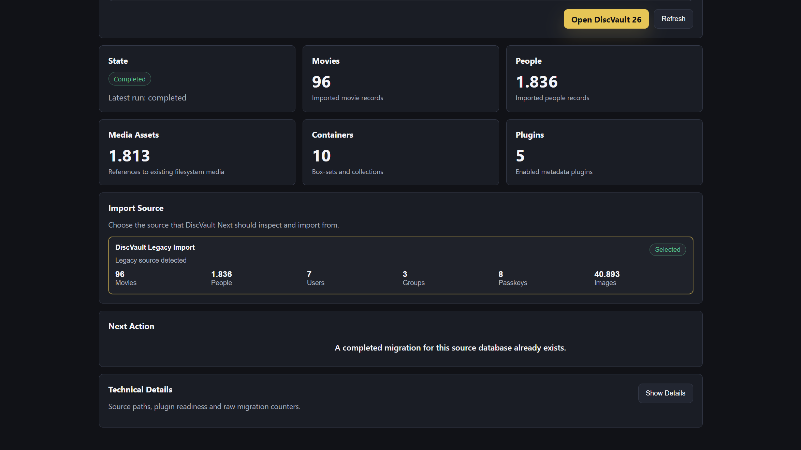
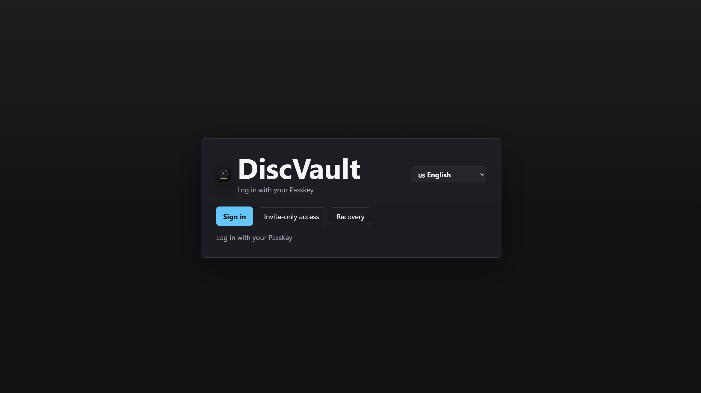

Back up Legacy
Create a backup from the old DiscVault app or copy the persistent data directory while the container is stopped.
DiscVault Legacy to DiscVault 26
Install DiscVault 26 next to your old DiscVault Legacy app, stop Legacy, check the data path and ports if you customized them, then follow the guided migration wizard.

Before you start
The migration is easiest when the old app is stopped, the new app is installed next to it, and the same persistent data path is available to DiscVault 26.
Create a backup from the old DiscVault app or copy the persistent data directory while the container is stopped.
Stop the Legacy container before starting DiscVault 26, especially when both apps would use the same data path or port.
If you changed the default data path or port numbers earlier, copy those settings into the new DiscVault 26 app before launching it.
Optional
Upgrading is not mandatory. If you want to keep using the old version, change your Docker image from discvault:latest to discvault:legacy.
After July 1, 2026, updating an installation that still tracks discvault:latest may install DiscVault 26. With the old Unraid Community App this can lead to a corrupted installation.
discvault:legacy before updating.discvault:latest and run updates after that date.discvault:latest -> discvault:legacyLegacy update message
When you open the latest DiscVault Legacy release, you may see a “New version available” message. This is an informational notice, not a forced upgrade.
discvault:legacy or the DiscVault 26 upgrade route.Use discvault:legacy to stay on the old version, or install DiscVault 26 with the Unraid or Docker route below. Do not keep updating an old discvault:latest install after July 1, 2026.


Recommended route
On Unraid, leave the old DiscVault template in place, stop it, and install the new DiscVault 26 app beside it from the Community App store.
Open the Docker tab in Unraid and stop the old DiscVault app. Do not delete it until the migration is verified.
Open Apps, search for DiscVault 26, and install the new Community Apps template next to the old app.
If you customized mappings in Legacy, make sure DiscVault 26 points to the same data location and uses free host ports.
Start the new app, open the web UI, and let the migration wizard guide the import from Legacy.
Second route
For a regular Docker setup, deploy the DiscVault 26 image, keep your persistent data mounted, and then use the same migration wizard.
Use the v26 image for the new container:
ghcr.io/helmerzNL/DiscVault:latestv26 image.Migration wizard
After installing DiscVault 26, the wizard walks you through authentication, checks, confirmation, progress, and launch.
Open DiscVault 26 and choose the Legacy migration flow when the start screen appears.
Use your current Legacy passkey so the wizard can confirm you are allowed to migrate the collection.
Check the source path, users, collection data, metadata, and settings that DiscVault 26 found.
Review the migration options and leave the defaults selected unless you have a specific reason to skip a part.
Read the final summary and start the migration only when the source and target look correct.
Keep the DiscVault 26 container running while the wizard imports data and shows live progress.
When the finished screen appears, review the status and keep the backup until you have checked the new app.
Launch DiscVault 26, then confirm your collection, users, passkeys, settings, posters, and lists are visible.







After migration
Open the library and check movies, containers, posters, metadata, watchlists, and history.
Confirm users, passkeys, roles, and admin access before removing or archiving the old app.
Keep your Legacy backup until you are comfortable that DiscVault 26 has everything you need.